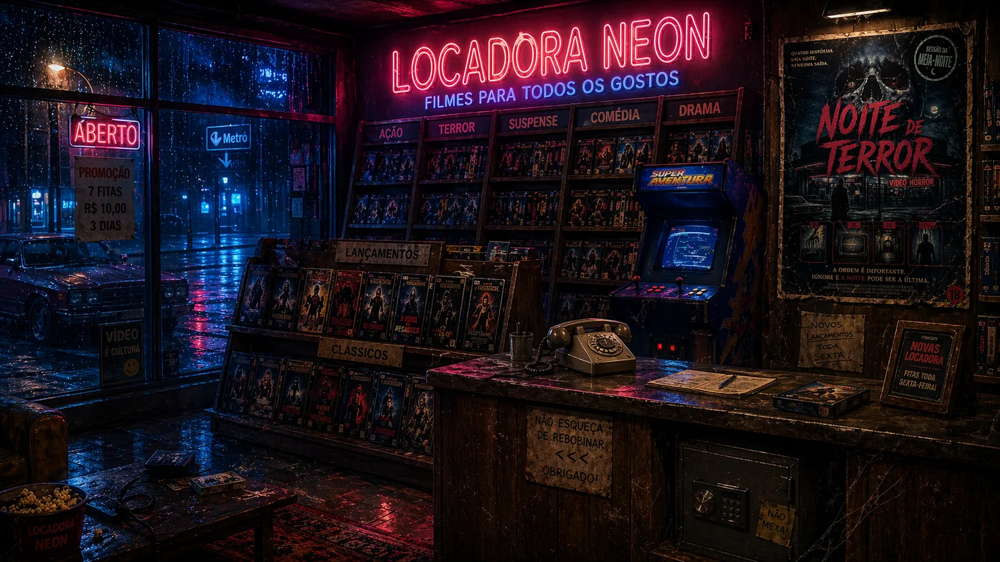
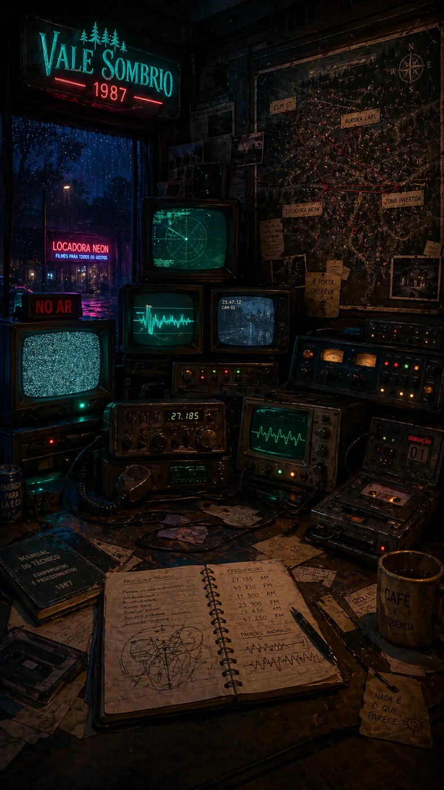

Um point-and-click investigativo para celular, agora com opção solo ou coop local, clima sobrenatural e progressão mais imersiva.
Explora a Locadora Neon, encontra valores escondidos, observa a posição dos objetos e abre o cofre.
Fica no bunker, estabiliza sinais, identifica a ordem da transmissão e compara com quem está na locadora.

